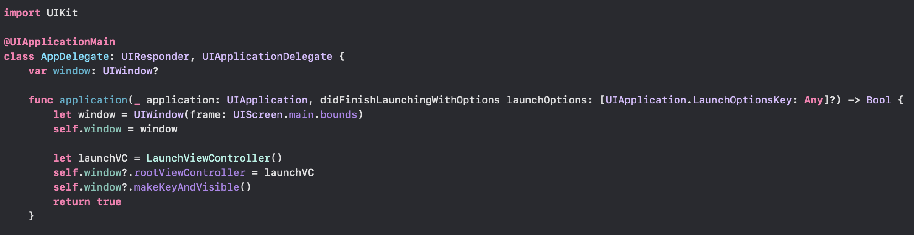

iOS 앱의 기본구조 2 - 실행과정과 실행상태
iOS 앱(UIKit 프레임워크)을 구성하는 핵심 객체들을 정리하고
앱이 어떻게 실행되는지 알아봅니다.
UIKit 프레임워크의 핵심 객체들
1) UIApplication
UIApplication은 시스템으로부터 이벤트를 받아 처리해주는 객체입니다.
UIKit 프레임워크에서 main이 실행되면, @UIApplicationMain 어노테이션이 선언된 클래스에서 UIApplicationMain 메서드를 실행하게 되는데, 이 메서드가 실행됨에 따라 UIApplication 객체가 생성됩니다.
UIApplication은 앱의 main event loop를 실행시키고 loop로 들어오는 다양한 이벤트가 적절하게 처리될 수 있도록 앱의 초기 라우팅을 처리합니다. 일반적인 유저 이벤트 뿐만 아니라 앱의 상태변화, 푸시 이벤트 처리, 앱 상태복원 작업 등 앱에서 발생하는 이벤트를 전반적으로 처리해주는 매우 중요한 객체이며, 특별한 케이스를 제외하고 앱은 1개의 UIApplication 객체만을 갖기 때문에 싱글턴으로 생성되어 shared로 앱 전역에서 접근이 가능하도록 설계되어있습니다.
UIApplication은 아래와 같은 역할을 담당합니다.
유저 이벤트의 초기 라우팅 처리
UIView 객체를 포함한 UIWindow 객체 리스트를 갖고있으며 발생한 이벤트를 지정된 UIWindow 객체에 보내서 적합한 UIView 객체가 받아서 처리하도록 해줍니다.UIApplicationDelegate 프로토콜을 준수하는 delegate(=AppDelegate)를 정의UIApplication은 UIApplicationDelegate 프로토콜을 준수하는 객체에 앱 시작, 메모리 부족 경고, 앱 종료 등과 같은 중요한 런타임 이벤트를 전달함으로써 앱이 해당 이벤트에 대응할 수 있도록 해줍니다.이메일 또는 이미지 파일과 같은 리소스 처리
email URL로 open(_:options:completionHandler:) 메서드를 호출하면 Mail 앱을 실행시킵니다.제공하는 API로 다양한 동작 수행 가능- 원격 알림 등록 (registerForRemoteNotifications())
- 실행취소-재실행 UI 트리거 (applicationSupportsShakeToEdit)
- URL 스킴을 처리하기 위해 등록된 앱이 설치되어있는지 결정 (canOpenURL(_:))
- 백그라운드 작업을 완료할 수 있도록하기 위한 앱 실행 확장 (beginBackgroundTask(expirationHandler:) and beginBackgroundTask(withName:expirationHandler:))
- 로컬 알림 스케쥴링 및 취소 (scheduleLocalNotification(:) and cancelLocalNotification(_:))
- 원격-제어 이벤트 수신 조정 (beginReceivingRemoteControlEvents() and endReceivingRemoteControlEvents())
- 앱 상태 복원 작업 수행 (상태 복원 작업을 관리하는 그룹의 메서드)
2) UIWindow
UIWindow는 앱의 UI를 보여주는 배경(backdrop)이자 View와 View Controller에 이벤트를 전달하는 객체입니다.
UIWindow는 뷰들을 담는 일종의 컨테이너입니다. 시각적으로 보이지는 않지만 앱에서 발생하는 이벤트를 View, ViewController에게 전달하고 ViewController과 상호작용을 통해 특정 이벤트를 실행하기 위한 객체입니다. UIWindow는 하나의 화면당 1개씩 필요하기 때문에 Muti-window를 사용하지
않는다면 보통 앱에서 1개의 UIWindow만 생성하여 사용하게 됩니다. UIWindow는 화면에 표시되지 않는 객체이기 때문에 rootViewController 프로퍼티에 ViewController를 할당해주어야 합니다.
아래는 UIWindow가 수행하는 역할입니다.
- 앱의 콘텐츠를 담아냅니다.
- UIApplication이 전달해준 이벤트를 View와 ViewController에게 전달합니다.
- ViewController와 연결되어 특정 이벤트를 처리합니다(e.g. 오리엔테이션 변경, 키보드 노출)
3) AppDelegate
AppDelegate는 앱에서 발생하는 이벤트 중 일부를 UIApplication으로부터 전달받아 처리하는 객체입니다.
UIApplication과 마찬가지로 UIApplicationMain 메서드가 실행될 때 생성되며, 앱이 종료될때까지 UIApplication과 연결되어 시스템과의 일부 상호작용을 관리합니다. AppDelegate는 말그대로 App의 일부 역할을 위임(delegate)받아 동작하는 객체이며, UIApplication이 전달해주는 시스템의 런타임 이벤트에 대하여 AppDelegate가 어떤 처리를 할 것인지 정의함으로써 개발자가 앱의 실행에 부분적으로 관여할 수 있도록 해줍니다. UIApplicationDelegate 프로토콜의 메서드를 정의하는 방식으로 말이죠.
iOS 13 이전의 AppDelegate는 App의 Life Cycle 이벤트까지 관리하며 앱 내 역할이 컸지만, iOS 13 부터 Scene 이 도입되면서 App의 Life Cycle 이벤트를 관리하는 주체가 SceneDelegate로 이전되었습니다. iPad-OS에 Multi-window 기능이 도입됨에 따라 화면(UIWindow, Scene)에 관련된 설정이나 앱 Life Cycle 이벤트는 SceneDelegate가 담당하게 되었습니다. Scene이 도입되면서 달라진 점에 대해서는 별도의 포스트로 다루려 합니다.
아래는 AppDelegate가 수행하는 역할입니다.
- (iOS 13 이전에는 App의 Life Cycle 이벤트를 관리합니다.)
- 앱의 데이터 구조를 초기화합니다.
- 앱의 Scene 환경설정을 담당합니다.
- 앱 밖에서 발생한 알림(e.g. 배터리 부족 경고 , 다운로드 완료 등등)을 처리합니다.
- 앱 자체를 타겟팅하는 이벤트에 대응합니다.
- APNS와 같이 앱 실행시 필요한 서비스들을 등록합니다.
UIKit 프레임워크의 핵심 객체들 초기화하기
이제 코드 상에서 UIApplication, UIWindow, AppDelegate가 어떻게 생성되고 초기화되는지 알아보겠습니다.
 iOS 13 이전의 AppDelegate
코드를 보면 UIApplicationDelegate 프로토콜을 준수하는 AppDelegate 클래스에 @UIApplicationMain 어노테이션 설정되어있습니다. @UIApplicationMain 어노테이션으로 앱의 Entry point가 설정되며 UIApplicationMain 메서드 호출하게 됩니다. UIApplicationMain 는 UIApplication, AppDelegate를 생성하고 초기화하면서 앱을 시작하게 됩니다.
AppDelegate의 application(_:didFinishLaunchingWithOptions:) 메서드는 앱의 launch 프로세스가 거의 마무리되고 실행되기 직전에 호출되는 메서드입니다. 이 메서드 내에서 UIWindow를 생성하고 초기화하는 처리를해서 앱의 디스플레이를 표시해줍니다.
앱의 실행 플로우차트
위의 내용을 종합하여 앱이 어떻게 실행되는지 알아봅니다.
 iOS App Launch Sequence
iOS App Launch Sequence
- 앱의 main 함수가 UIApplicationMain 메서드 실행
- UIApplication 싱글턴 객체 생성
- AppDelegate 객체를 생성하고 UIApplication 객체를 연결(delegate 설정)
- UIApplication 객체가 info.plist 파일에서 앱 실행에 필요한 데이터와 객체 로드
- UIApplication 객체가 앱의 main event loop를 생성하고 관리
- (Storyboard Based 앱의 경우) UIApplication 객체가 main storyboard 파일을 로드하고 UIWindow와 Root ViewController를 생성하고 초기화
- AppDelegate의 application(_:willFinishLaunchingWithOptions:) 메서드 호출
- AppDelegate 및 ViewControllers의 추가 메서드를 호출하여 앱 상태 복원
- AppDelegate의 application(_:didFinishLaunchingWithOptions:) 메서드 호출
- (Storyboard를 사용하지않는 앱의 경우) UIWindow와 Root ViewController를 생성하고 초기화하고 화면에 표시. rootViewController를 지정하고 makeKeyAndVisible 메서드를 호출합니다.
- AppDelegate의 applicationDidBecomeActive: 메서드 호출되며 앱 활성화
- 앱 이벤트 루프에서 이벤트 핸들링 시작하며 앱 실행
 Foreground에 실행되는 iOS 앱 플로우차트
Foreground에 실행되는 iOS 앱 플로우차트